ContactForceN_ViscoElasticNonlinear class
Contents
Description
This is a sub-class of the ContactForceN class for the implementation of the Nonlinear Visco-Elastic normal contact force model.
This model assumes that the normal contact force has an elastic 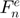 and a viscous 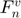 component, provided by a nonlinear spring and dashpot, respectively.
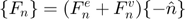
The elastic force is always computed according to Hertz contact theory:
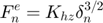
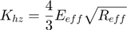
The viscous force can be computed by 3 different formulas:
- Critical ratio:
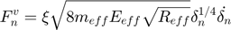
Perfectly elastic: 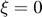
Critically damped: 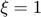
- TTI (Tsuji, Tanaka, Ishida):
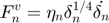
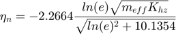
- KK (Kuwabara & Kono):
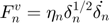
- LH (Lee & Herrmann):
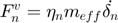
The damping coefficient 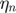 must be provided for models KK and LH.
Notation:
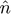: Normal direction between elements
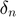: Normal overlap
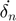: Time rate of change of normal overlap
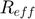: Effective contact radius
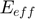: Effective Young modulus
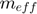: Effective mass
: Normal coefficient of restitution
References:
- K.L. Johnson. Contact Mechanics, Cambridge University Press, 1985 (Hertz contact theory)
- H.R. Norouzi, R. Zarghami, R. Sotudeh-Gharebagh and N. Mostoufi. Coupled CFD-DEM Modeling: Formulation, Implementation and Application to Multiphase Flows, Wiley, 2016 (damping coefficient formula in TTI viscous model)
classdef ContactForceN_ViscoElasticNonlinear < ContactForceN
Public properties
properties (SetAccess = public, GetAccess = public)
% Formulation options
damp_formula uint8 = uint8.empty; % flag for type of damping formulation
damp_ratio double = double.empty; % ratio of the critical damping
remove_cohesion logical = logical.empty; % flag for removing artificial cohesion
end
Constructor method
methods
function this = ContactForceN_ViscoElasticNonlinear()
this = this@ContactForceN(ContactForceN.VISCOELASTIC_NONLINEAR);
this = this.setDefaultProps();
end
end
Public methods: implementation of super-class declarations
methods
%------------------------------------------------------------------
function this = setDefaultProps(this)
this.damp_formula = this.TTI;
this.damp_ratio = 0;
this.remove_cohesion = true;
end
%------------------------------------------------------------------
function this = setCteParams(this,int)
% Stiffness coefficient (Hertz model)
this.stiff = 4 * int.eff_young * sqrt(int.eff_radius) / 3;
% Damping coefficient
if (isempty(this.damp))
if (this.damp_formula == this.CRITICAL_RATIO)
this.damp = this.damp_ratio * sqrt(8 * int.eff_young * int.eff_mass * sqrt(int.eff_radius));
elseif (this.damp_formula == this.TTI)
ln = log(this.restitution);
this.damp = -2.2664 * ln * sqrt(int.eff_mass * this.stiff) / sqrt(10.1354 + ln^2);
end
end
end
%------------------------------------------------------------------
function this = evalForce(this,int)
% Needed properties
dir = int.kinemat.dir_n;
ovlp = int.kinemat.ovlp_n;
vel = int.kinemat.vel_n;
k = this.stiff;
d = this.damp;
m = int.eff_mass;
% Elastic force (Hertz model)
fe = k * ovlp^(3/2);
% Viscous force
switch this.damp_formula
case this.NONE_DAMP
fv = d * vel;
case this.CRITICAL_RATIO
fv = d * ovlp^(1/4) * vel;
case this.TTI
fv = d * ovlp^(1/4) * vel;
case this.KK
fv = d * ovlp^(1/2) * vel;
case this.LH
fv = d * m * vel;
end
% Force modulus
f = fe + fv;
% Remove artificial cohesion
if (f < 0 && this.remove_cohesion)
f = 0;
end
% Total tangential force vector (against deformation and motion)
this.total_force = -f * dir;
end
end
end